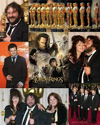

Awards and Recognition
"The Lord of the Rings" trilogy received numerous awards, including 17 Academy Awards in total: "The Fellowship of the Ring" won 4, "The Two Towers" won 2, and "The Return of the King" won 11, including Best Picture.
Explore the wonders of Middle-earth
"The Lord of the Rings" trilogy received numerous awards, including 17 Academy Awards in total: "The Fellowship of the Ring" won 4, "The Two Towers" won 2, and "The Return of the King" won 11, including Best Picture.